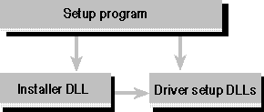

The installation process starts when the user runs the setup program. The setup program works in conjunction with the installer DLL and a driver setup DLL for each driver. Both the setup program and the installer DLL use the arguments in the SQLInstallDriverEx and SQLInstallTranslatorEx functions to determine which files to copy or delete for each component. The following figure shows the relationship between these installation components.

Installation components
Important The ODBC.INF file that was used in ODBC 2.x to describe the files required by each ODBC component is not used in ODBC 3.x. Drivers that ship ODBC 3.x components do not need to create an ODBC.INF file. The removal of SQLInstallDriver and SQLInstallODBC, and the deprecation of SQLInstallTranslator, have rendered ODBC.INF unnecessary. The driver information that used to be in the Driver Keyword sections of ODBC.INF is now provided in the lpszDriver argument in SQLInstallDriverEx. The translator information that used to be in the [ODBC Translator] and Translator Specification sections of ODBC.INF is now provided in the lpszTranslator argument of SQLInstallTranslatorEx. These changes allow the ODBC Installer to be more portable across platforms.